Learning Outcome 1: Interactive Media Products
Within the landscape of technology, media, and design, I've oriented myself as a student who crafts interactive media products. These creations are not just conceptual but have been rigorously tested, reflecting my dedication to practical application. My portfolio is a reflection of my journey, with a unique twist that speaks to my personal experiences. Inspired by my ten years of training in a traditional Japanese karate dojo, I've infused the portfolio with a karate theme. The decision to do so wasn't arbitrary; it's a homage to the discipline, resilience, and culture that have shaped me. The background of the portfolio features Japanese symbols representing the name of the karate dojo where I spent countless hours honing my skills. Additionally, the color palette of black, red, and dark red was chosen deliberately to evoke the spirit of martial arts and Japanese tradition. Pinterest served as a wellspring of inspiration, guiding me towards these colors that resonated deeply with my karate background. Through this thematic approach, my portfolio becomes more than just a showcase of technical prowess. It becomes a narrative, offering insight into who I am and what drives me. It's a testament to my passion for both design and martial arts, weaving together elements of creativity and discipline into a cohesive whole.
In crafting my portfolio, I drew inspiration from various sources, including Pinterest, where I discovered images that perfectly encapsulated the color scheme I envisioned. I've attached a selection of Pinterest pins that served as inspiration for the color palette used in my portfolio.
By referencing these Pinterest pins, I sought to replicate the mood and atmosphere they conveyed within my portfolio. The colors serve not only as a nod to martial arts but also as a deliberate choice to evoke a sense of tradition, strength, and elegance throughout my work.
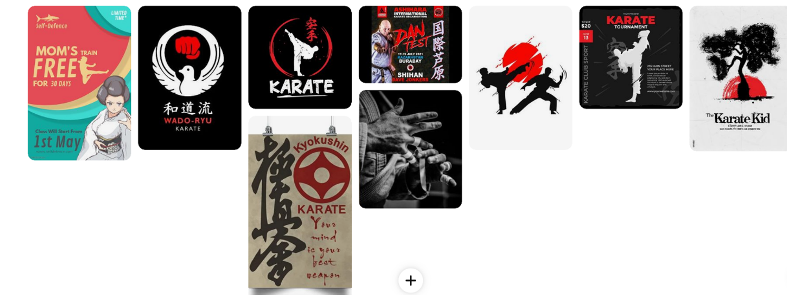In addition to drawing inspiration from digital sources like Pinterest, I also utilized traditional methods of sketching by hand to develop the layout and positioning of elements in my portfolio. The attached photo showcases a series of sketches I created during the initial stages of planning.
These hand-drawn sketches served as a vital step in the design process, allowing me to translate conceptual ideas into tangible layouts. By combining digital and traditional methods, I was able to create a portfolio that not only showcases my technical skills but also reflects my creative process and attention to detail.
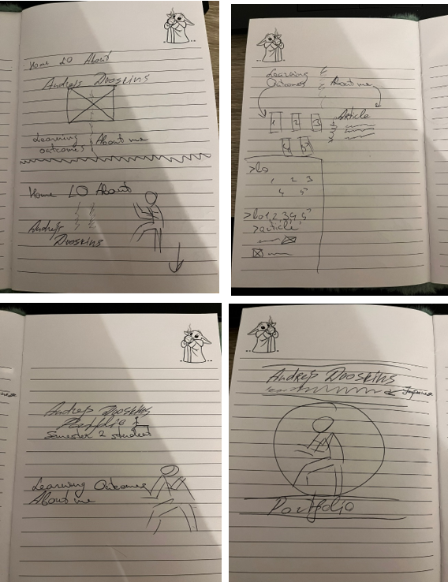Following the initial sketches, I transitioned to digital prototyping using Figma to further develop the layout and interaction of my portfolio. However, as I delved deeper into the design process, I encountered some challenges and struggled with the overall aesthetic.
Figma prototype 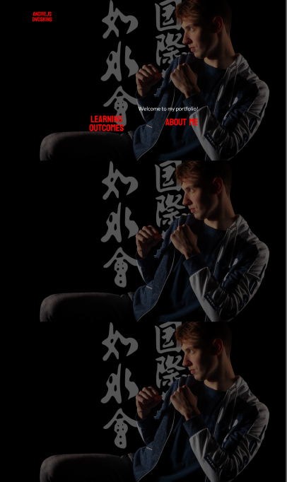The attached Figma prototypes represent my initial attempts at translating the hand-drawn sketches into digital form. While the prototypes captured the basic structure and functionality of the portfolio, I found myself dissatisfied with the visual presentation.
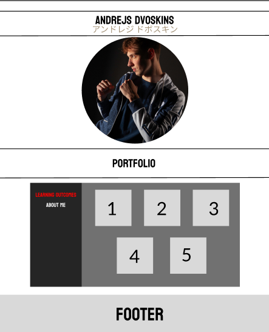As I explored different design elements and experimented with various arrangements, I struggled to achieve the cohesive and polished look that I envisioned for my portfolio. Elements such as color choices, typography, and spacing didn't seem to harmonize as seamlessly as I had hoped.
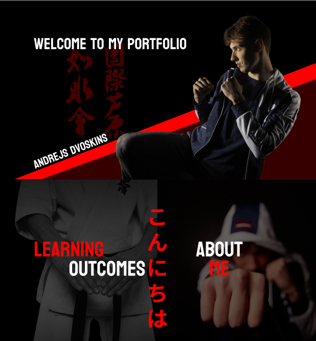 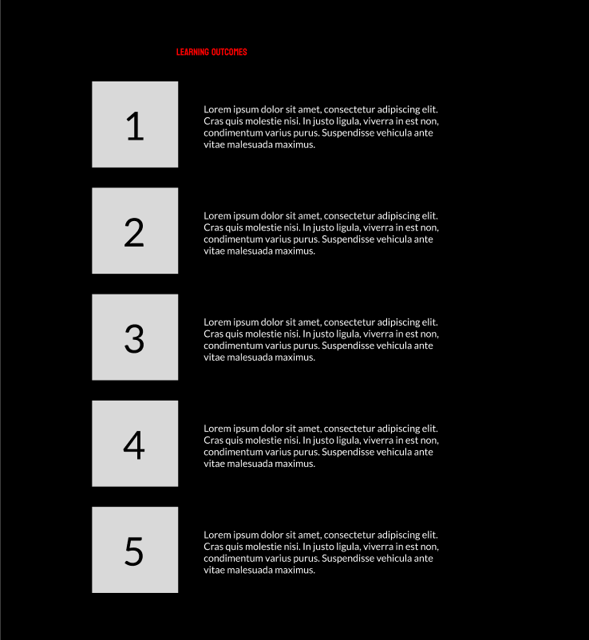Despite the challenges, the Figma prototypes provided valuable insights and opportunities for refinement. By actively seeking feedback and iterating on the design, I was able to gradually overcome these hurdles and make significant improvements to the overall aesthetic and user experience of the portfolio.
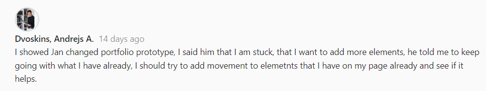After receiving feedback from teachers to maintain the design but inject more dynamism into it, I decided to incorporate a simple animation on the index page of my portfolio. The animation activates when users scroll down the page, gradually revealing my photo in a visually engaging manner. This animation serves to add an element of interactivity and intrigue to the design, capturing the attention of visitors as they navigate through the portfolio. By making my photo more visible as users scroll, it creates a sense of progression and draws focus to the personal aspect of the portfolio. The addition of this animation not only enhances the overall aesthetic appeal but also reinforces the narrative and storytelling elements of the portfolio. It's a subtle yet impactful way to make the design more dynamic and memorable, while still retaining the essence of the original concept that resonated with teachers.
Below, you'll find the updated rendition of my portfolio, showcasing the alterations I made according to feedback.
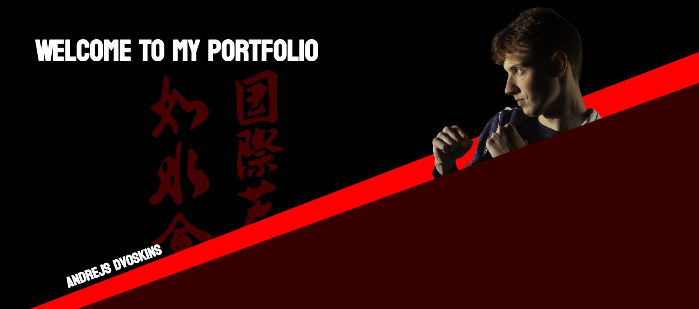 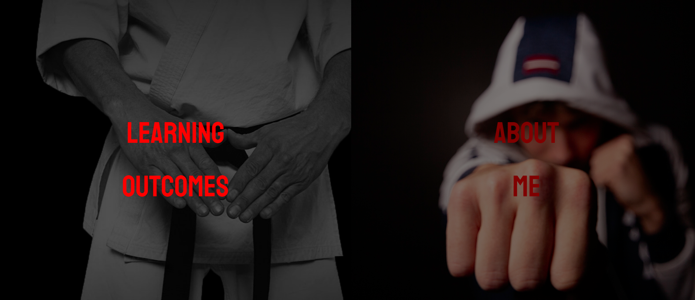 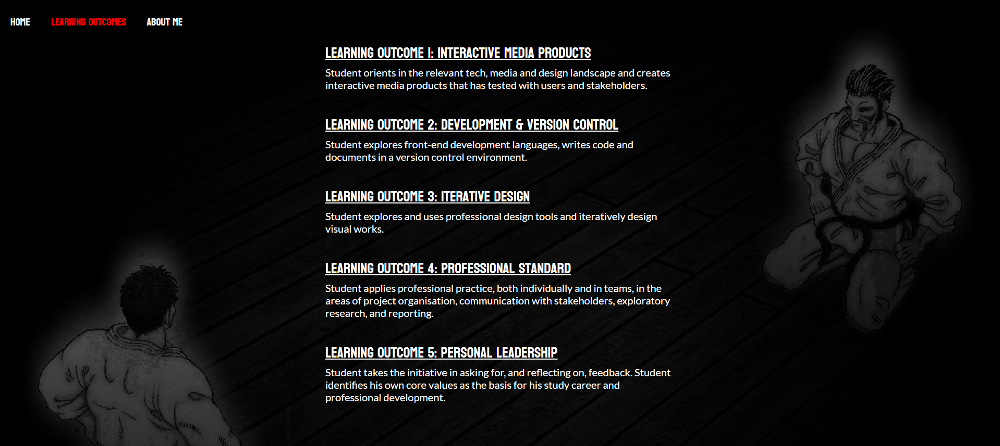Our group was tasked with creating an interactive platform to showcase the diverse ICT profiles available at Fontys. The aim was to provide insights into each profile, helping potential students make informed decisions about their academic paths. Research Phase: To kickstart the project, I spearheaded a comprehensive research initiative. Conducting 10 in-depth interviews with current Fontys ICT students, I aimed to gather insights into their experiences, preferences, and expectations. These interviews were pivotal in shaping our understanding of the target audience and refining our project objectives. Figma Prototype Development: After I got valuable insights from the research phase, I transitioned to the prototyping stage. Leveraging Figma, I collaborated with my team to translate our ideas into a tangible digital prototype. The prototype was meticulously crafted to emulate a user-friendly interface, seamlessly navigating users through the various ICT profiles offered at Fontys. Our prototype was mostly inspired form this website:
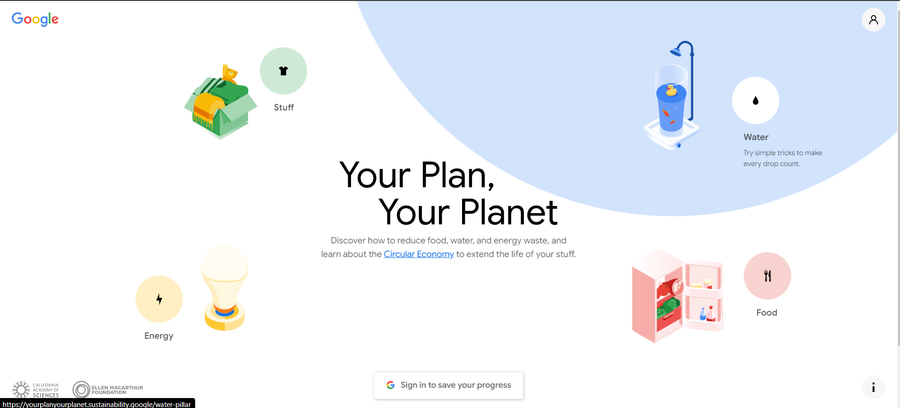Key Learnings: Through this project, I not only enhanced my technical skills but also cultivated a deeper understanding of user-centric design principles. The research phase underscored the importance of empathy and user feedback in shaping effective interactive media products. Additionally, the hands-on experience with Figma broadened my proficiency in prototyping tools, empowering me to visualize and iterate upon complex design concepts with ease.
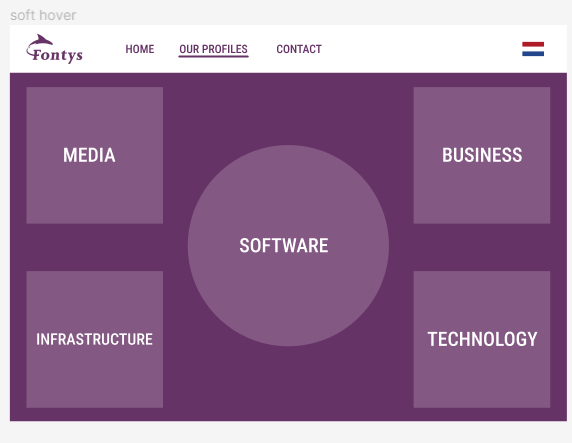Figma prototype